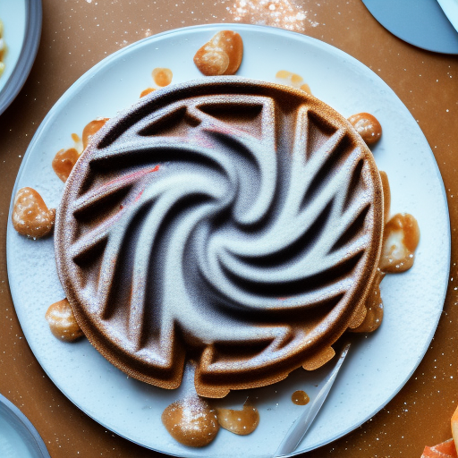

Whimsical Whirlwind Waffles

Description
Get ready for a breakfast adventure that will have your taste buds doing the cha-cha and your kitchen doing the twist! Introducing the "Whimsical Whirlwind Waffles," a recipe so delightfully off-kilter, it'll make your morning routine feel like a carnival ride.
Ingredients
- 1 cup of flour (or however much falls out of the bag when you're not looking)
- 2 teaspoons of baking powder (because who needs precise measurements anyway?)
- A pinch of fairy dust (or sugar, but let's keep the magic alive)
- 1 egg (or the equivalent in "cracking open" enthusiasm)
- 1 cup of milk (or until your inner chef says, "That looks about right!")
- 2 tablespoons of melted butter (make sure it's melted, not having a butter bath)
Instructions
- Attempt to measure out 1 cup of flour. Accidentally cover the counter, your shirt, and possibly your cat in a light dusting of flour. If you've achieved this without sneezing, give yourself a flour-covered high-five.
- Tap dance your way to the spice cabinet, grab the baking powder, and tip-toe your fingers over the measuring spoons. If you spill a little, consider it your contribution to the kitchen floor's self-care routine.
- Sprinkle in a pinch of fairy dust, envisioning the waffles taking flight on the wings of magic. If they don't actually levitate, don't be disappointed; they're just camera shy.
- Crack open the egg with the enthusiasm of a kid unwrapping a birthday gift. If shell fragments join the party, remember, they're just crunchy surprises for later.
- Pour in the milk with a flourish, stopping when the universe whispers, "That's waffle-y enough." If you accidentally overshoot, pretend you're adding extra love.
- Melt the butter and add it to the mix with a dramatic drizzle. Imagine you're in a cooking show and the audience is in awe of your butter-wielding prowess.
- Grab a whisk and stir the batter with the zeal of a conductor leading a symphony. If batter splatters, consider it a food-inspired Jackson Pollock masterpiece.
- Pour the batter onto a preheated waffle iron. Imagine the iron as a portal to a whimsical world where waffles are currency and syrup flows like rivers of joy.
- Watch as the waffles cook to a perfect golden hue. If they start to resemble characters from your favorite cartoon, that's just your breakfast showing off its acting skills.
- Drizzle your waffles with syrup in a mesmerizing pattern. Think of yourself as a syrup artist, crafting a masterpiece that's almost too beautiful to eat. Almost.
- Sit down to enjoy your creation with a joyful heart and a healthy dose of laughter. Don't be surprised if you find yourself spontaneously doing the twist in your seat; blame it on the "Whimsical Whirlwind Waffles" magic!